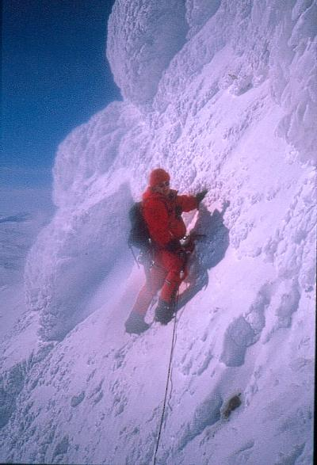
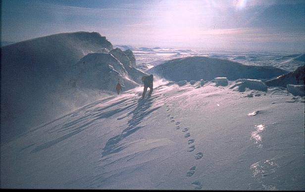
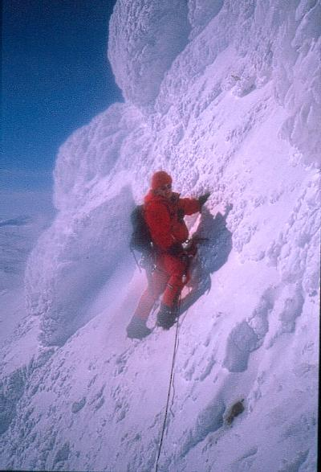
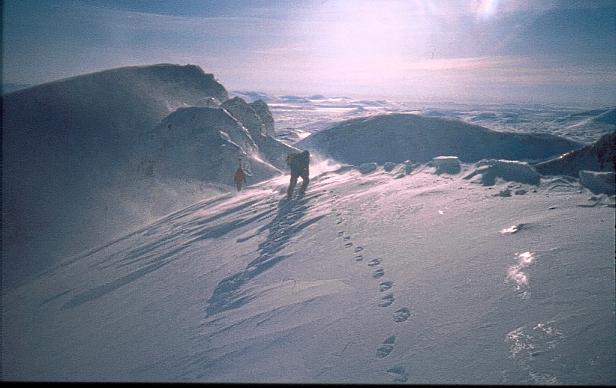

Kategori:Jämtland
Sylarna är den svenska alpinklättringens vagga där de första turerna gjordes på sent 1800-tal. Den främsta attraktionen är Stora syltraversen.
Film över Stora syltraversen sommar 2012.
Film: Robin Haag
 



Copyright (C) Permission is granted to copy, distribute and/or modify this document under the terms of the GNU Free Documentation License, Version 1.3